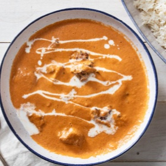

← All recipes
Better Pressure Cooker Butter Chicken

Servings: 4 to 6 servings · Prep: 15 mins · Cook: 60 mins
Ingredients
- For the Marinating the Chicken:
- 1 tablespoon kasuri methi (fenugreek leaves) or, alternatively, 2 teaspoons fenugreek seeds (see notes)
- 1/4 cup (60 ml) plain Greek yogurt, store-bought or homemade
- 1 tablespoon garam masala, store-bought or homemade
- 2 teaspoons Diamond Crystal kosher salt (if using table salt, use half as much)
- 1 teaspoon kala namak (black salt) (optional, see notes)
- 1 (1-inch) piece of ginger (1/2 ounce; 14 g), peeled and finely grated
- 2 pounds (900 g) boneless, skinless chicken thighs (about 4 thighs), cut into bite-size, 1-inch pieces
- For the Makhani Sauce:
- 1 tablespoon plus 2 teaspoons kasuri methi (fenugreek leaves) or, alternatively, 1 tablespoon fenugreek seeds (see notes)
- 2 whole dried chiles de arbol (see notes)
- 1 pod brown cardamom or, alternatively, 1 pod green cardamom (see notes)
- 1 whole clove
- 1 tablespoon garam masala, store-bought or homemade
- 1 tablespoon Diamond Crystal kosher salt (if using table salt, use half as much)
- 1 ounce (28 g) raw cashews (about 12 to 15 cashews )
- 1 (28-ounce; 800 g) can whole fire-roasted tomatoes (see notes), strained, with 1/2 cup of liquid reserved
- 2 tablespoons (30 ml) canola oil or other neutral-flavored oil
- 1 medium white onion, peeled and cut into 1/2-inch dice
- 1/4 teaspoon baking soda
- 1 (1-inch) piece of ginger (1/2 ounce; 14 g), peeled and thinly sliced
- 4 cloves garlic, smashed and roughly chopped
- 1/2 cup (120 ml) heavy cream, plus more for drizzling
- 4 tablespoons (60 g) unsalted butter, cut into 4 pieces
- Warm long-grain rice, for serving
Directions
- To Marinate the Chicken: Add fenugreek leaves (or fenugreek seeds, if using) to small skillet and place over medium heat. Toast leaves, tossing them constantly, until quite fragrant, about 30 seconds. Transfer toasted leaves to spice grinder or mortar and pestle and grind to fine powder. Set aside.
- In the center of a rimmed baking sheet, create a roughly 9- by 13-inch aluminum-foil boat with 1-inch sides, and set aside. (Alternatively, if you have a 1/4 rimmed baking sheet, use that instead, omitting foil.) In a medium mixing bowl, stir together yogurt, garam masala, salt, black salt, grated ginger, and ground fenugreek leaves.
- Add chicken thigh pieces to bowl and, using clean hands, toss with marinade until evenly coated. Transfer chicken to prepared baking sheet, arranging pieces in an even, single layer. Set aside.
- For the Makhani Sauce: Add fenugreek leaves (or seeds, if using), chiles de arbol, brown cardamon (or green cardamom, if using), and clove to small skillet and place it over medium heat. Toast, tossing frequently, until spices are quite fragrant, about 1 to 2 minutes. Transfer spices to spice grinder or mortar and pestle along with garam masala and salt and grind to a fine powder. Set aside. (If you don't want to toast and grind the spices yourself, see the note section for instructions on making a spice mixture with pre-ground spices.)
- In a small, microwave-safe bowl, combine cashews and reserved liquid from strained tomatoes. Microwave on high until cashews look plump and have softened slightly, about 1 minute. Set aside.
- Add canola oil to pressure cooker pot. If using an electric pressure cooker, turn on "Sauté" function. If using a stovetop pressure cooker, place pot over medium-high heat. When oil is shimmering, add onions and baking soda and, using a wooden spoon, stir to coat onions in oil and distribute baking soda. Cook, stirring occasionally, until onions have completely broken down, most of their moisture has cooked off, and they begin to brown, 14 to 17 minutes. If at any point, the onions seem to be browning too quickly or unevenly, add a tablespoon (15ml) of water and scrape up any brown bits that form on the bottom of the pot.
- If using an electric pressure cooker, turn off "Sauté" function. If using a stovetop pressure cooker, reduce heat to medium-low. Add ginger and garlic to pot and cook, stirring constantly, until quite fragrant, about 1 minute. Using wooden spoon, push onions into center of pot to form a mound. Add ground spice mixture to the mounded onions to prevent spices from scorching. Cook, stirring constantly, until onions are coated in spices and mixture is very fragrant, about 30 seconds. Add cashews and their soaking liquid, scraping up any bits stuck to the bottom of the pot. Add tomatoes and, using the back of wooden spoon, crush tomatoes.
- If using an electric pressure cooker, turn on "Pressure Cook" function; set pressure to high and time to 7 minutes (do not close lid). If using a stovetop pressure cooker, increase heat to medium. Cook, uncovered, stirring constantly, until mixture comes to a simmer. Close and seal pressure cooker lid, bring to high pressure, and cook for 7 minutes. Allow contents of pressure cooker to sit, off-heat, for an additional 7 minutes.
- If, after 7 minutes, the pressure cooker has not depressurized, manually release pressure.
- While the sauce cooks, adjust oven rack to 3 inches below broiler element and preheat broiler on high. Transfer sheet pan with marinated chicken to broiler. Cook, checking the chicken frequently to ensure it is not burning, until chicken is charred in spots and fully cooked through, about 14 minutes (time will vary depending on the strength of the broiler). Remove chicken from broiler and set aside.
- Using an immersion blender, blend contents of pressure cooker until completely smooth, about 2 minutes. Alternatively, transfer contents of pressure cooker to countertop blender and blend until completely smooth, about 2 minutes. Add butter and cream, and blend until completely smooth and emulsified, about 2 minutes. At this point, you may remove 1 1/2 (360ml) cups of sauce and reserve it for another use. If using a countertop blender, return sauce to the pot.
- To Finish: Add reserved broiled chicken along with any juices in the sheet pan to sauce and stir until chicken is well incorporated and warmed through. Ladle chicken and sauce into serving bowl and drizzle with additional heavy cream. Serve immediately with rice alongside.
Original source: seriouseats.com